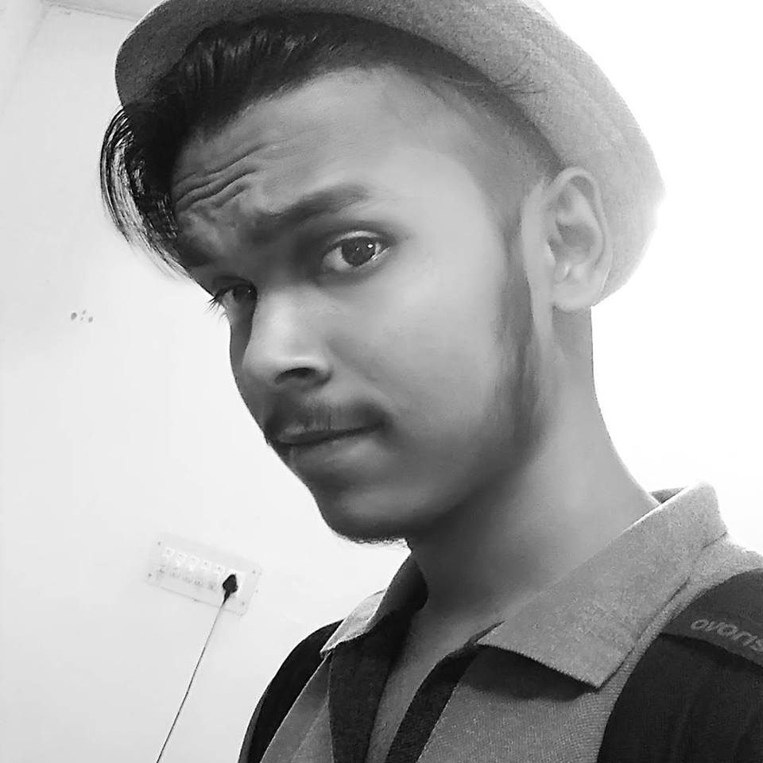

INTRODUCTION

"If we want users to like our software, we should design it to behave like a likeable person."
:- Alan Cooper
Hi,
I am Santan Kumar Sharma currently pursuing my B-Tech from Arya College Of Engineering And IT in the stream of Computer Science.
I am deeply interested in competitive programming and web design & development. I have an interested in open source contribution also.
Most of time I compete with different programmers on different portals like:- Hackerrank, Hackerearth, Code-Chef etc. I love to code, It increase my knowledge and the way of thinking.
Other then Technicals I am interested in playing badminton and writing poetries. Playing badminton keeps me fit and I write poetries to expressing myself with my golden words.
I love working with people to do things bigger than I could accomplish alone. I’m motivated by big problems, and I think you’ve got some here that I can help solve.